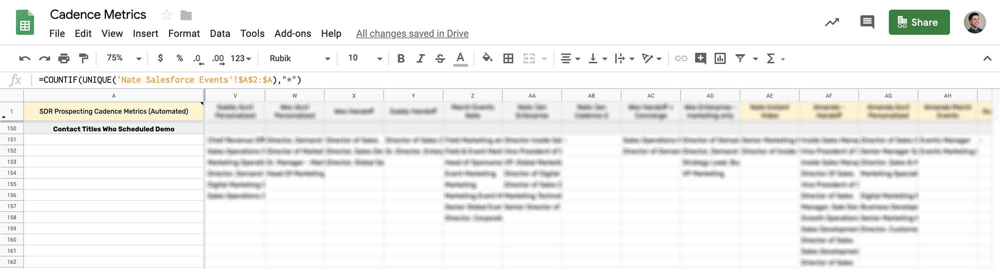

Tracking over 140 different metrics from activity through to closed-won deals to analyze and drive strategy.
Los Angeles
Problem
Reporting on how individual sales reps and their cadences were doing was a manual process. With Chili Piper being a data-driven company, we wanted to be able to make decisions backed by data, which meant we were tracking and manually updating over 37 metrics per rep and per cadence.
This data took a lot of time to update and would become outdated quickly, so it became a bottleneck for learning what pain points, value props, and angles worked best and also limited how quickly we could run new cadence experiments.
Here’s how the old one looked like:

Lots of great data recorded, but updated manually each week which became quickly outdated.
Solution
We had to automate this process as much as possible if we wanted to learn what works faster and run experiments more frequently. This would also free up time we could then spend on improving our cold outbound strategy.
Making this could be broken down into three parts.
Part I— Measuring Activity Data
The first part was getting the general activity from SalesLoft (SL) into SFDC and then automating that into a Google Sheet.
Step 1 — Getting SalesLoft Data Into Salesforce
Luckily, SL has a native integration with SFDC which writes each email, call, and LinkedIn connect/InMail as an Activity to the Contact record.
Step 2 — Building the Salesforce Reports
Next I needed to make an SFDC Activity report for each cadence. With the SL and SFDC integration, it was as simple as using a filter for the cadence name. Next was customizing the columns to include all the data we wanted to capture and report on. Once the first report was created, all we needed to do was copy the report, change the cadence name we were filtering for, and save as a new report.
Step 3 — Automating the Salesforce Reports Into Google Sheets
Using a tool called G-Connector, we were able to login to SFDC from a Google Sheet, find our cadence reports, and schedule a daily import of each cadence we wanted to track as a separate tab in the spreadsheet.
Step 4 — Building the Dashboard
The most difficult part of this process was building the tab that pulled all the data from these cadence reports. Once all the formulas were created to get the data we wanted, we could simply copy the formulas into each subsequent column for the next cadence. Using another tool called Advanced Find and Replace, we could quickly replace all the tab references inside each formula with another without having to edit each individual cell’s formula.
Here’s what this dashboard looked like:

With everything in SFDC, we could easily break out cadence metrics by the Contact level (individuals) and an Account level. So for instance, we could see how many unique accounts were targeted in a cadence versus just the total people. We could then expand on that and look at the bounce rate, open rate, reply rate, calls, connects, etc at an Account level or at a Contact level.
Using conditional formatting, we could quickly see which cadences and reps were performing better than others, find out why, and scale that to future cadences and the rest of the team.
Part II — Measuring Down-Funnel Metrics
Since the response rate of a cadence won’t tell us whether it’s a success or failure on its own, we needed to connect booked meetings, opportunities, pipeline, and ultimately closed-won deals to each cadence. To do this, we need to push cadence data from a Contact to an Opportunity object and then pull an Opportunity report into our spreadsheet.
Step 1 — Push SalesLoft Cadence Data From the Contact to an Opportunity
This is possible using a process builder in SFDC. When an opportunity is created, the process builder will pull the SL cadence data from the Primary Contact and write it to the Opportunity. Then those fields are locked so any new SL activities to that Contact won’t overwrite on the Opportunity. That way, we know the cadence data on the Opportunity is the last meaningful activity that generated the booked meeting.
Step 2 — Building the Salesforce Opportunity Report
A simple Opportunity report filtering for only outbound opportunities with SL cadence data in the columns is essentially all we needed. Then we automated this report to our spreadsheet using G-Connector.
Step 3 — Adding Down-Funnel Metrics Into the Dashboard Tab
Now with just simple COUNTIF formulas, we can see all the down-funnel metrics a cadence produced from booked meeting to close won.
Here’s what we looked at:

Now we were able to measure how effective a cadence was by the rate of accounts worked to meetings booked (and pipeline generated).
Part III — Figuring Out What Works
Since we’re able to pull in the cadence name and cadence step names into SFDC and onto Opportunities, we can add keywords (or tags) to each cadence step name to segment performance. So for instance, we can measure how certain angles or content (images, GIFs, etc) perform. This is additional information we used to build new and improved cadences.
Step I — Measure Performance of Each Email
By using strict cadence name and cadence step naming conventions, we were able to easily break out performance by each email step for every cadence with one formula. We simply looked if cadence step name contained “Email 1” or “Email 2” etc.
Here’s what that looks like with conditional formatting, to easily spot winning emails:

Step II — Add Keywords to Each Cadence Name
SL won’t retroactively update what’s sent to SFDC in the integration, so we were only able to segment out by keywords for future cadences. First we tested influence and persuasion angles and we were able to measure the open and response rate for emails in that cadence that used that angle.
Here’s what that looked like:

Step III — Adding Titles of the Contacts Who Booked
Then to measure a part of our outbound targeting, we looked at the roles of each contact who we booked a meeting with. Because each person’s title is somewhat unique, we just listed out the title in an array where we could visually inspect the kind of roles people had who resonated with our messaging and product, which we used for refining future targeting.

Result
With all this data, we now could measure over 140 metrics per cadence per rep, automatically (mostly). This is how we were able to quickly test and evolve our outbound strategy and cadences to be more effective.